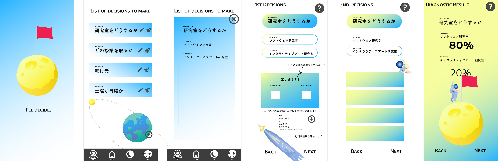
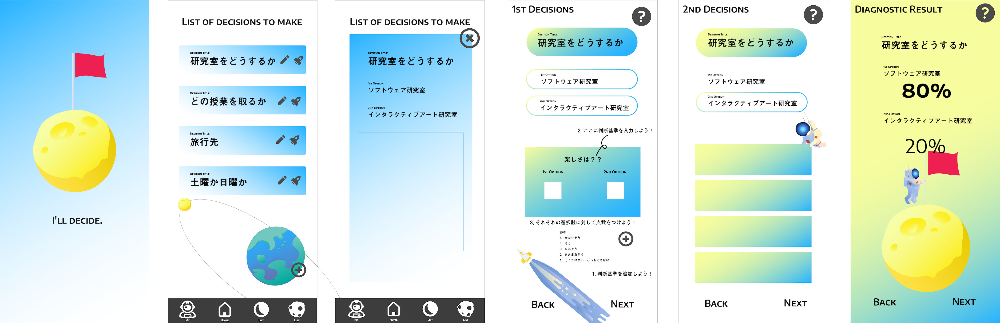

モバイルメッセージングにおける感情伝達の拡張
research
text communication
2022 - now
モバイルメッセージングにおける感情伝達の拡張
モバイルメッセージングでは、誤解やすれ違いなどの感情伝達の不足が生まれやすいと言われています。 原因として、声や表情といった非言語情報が伝わらないことや、受け手や送り手との感情の捉え方に差が出てしまうことなどが挙げられます。 私はこれらの点を踏まえた上で、モバイルメッセージングにおいての感情伝達をより円滑にしたいと考えています。
B4での感情伝達の拡張


I'll decide
application
assist in decision-making
2021
I'll decide
決断を困っている人のための2択専用アプリ
決断すべきことへの頭の整理、より決断をアシストする
 

制作背景
なぜ2択専用？？
→ 選択肢が多すぎると人は決断しにくくなる コロンビア大学のシーナ・アイエンガー博士による「ジャム実験」
→ 世の中、2 択じゃない状況の方が多い
選択肢 A B C D E...▷ A or B , C or D ...
▷ A or それ以外か ...
複数選択肢もまずは 2 択にする（分類する）と解決しやすくする
→ 2択の場は作るけれど、2 択の選択肢をどうやって作るかはユーザー次第
アプリデザイン
青色：冷静になれる色、沈みきっている場合には余計それを促進させてしまう
➡︎ 冷静な判断ができるようにライトブルーで軽いイメージにした
黄色：元気、軽快、希望を喚起する色
➡︎ 明るく良い決断という印象を持たせるように、決定画面に近づくにつれ黄色く
-------------------
2021
制作期間 5ヶ月
使用ソフト Unity, Illustrator, Photoshop
使用言語 C#
School Pranks
game
AR
2021
School Pranks
「AR技術を使用した、東京都立大学日野キャンパス内のゲーム提案」という課題のもと、
"学校でしたいけどできないこと＝いたずら"をするARゲームを作りました。
-------------------
2021 ARハッカソン
優秀賞
制作人数 3人
役割 アプリデザイン、UI、1stシーン制作
制作期間 1週間
使用ソフト Unity, Illustrator, Photoshop, AfterEffect

data visualization
2021 - 2022
data visualization
の2つの方向性の可視化に取り組んだ
1. データアーティストとして、詩的な作品としてのパーソナルな可視化プロジェクト
2. データジャーナリストとして、社会問題を提起するソーシャルな可視化プロジェクト
なぜ人々の新聞離れは止まらないのか？
-------------------
2021
使用ソフト Observable
使用言語 HTML, CSS, D3.js
あなたの3分
website
scroll
2021
あなたの3分
カップラーメンを待つ3分、皆さんは何をしていますか？
このサイトには、ある日の、にしもりちずの、3分の待ち時間の、実録が載っています。
お湯が入るとタイマーがスタートし、スクロールすると画面が動きます。
スクロールの時間分、一緒にカップラーメンを待ちましょう。
お好みの麺の硬さになるといいですね。
もし硬すぎる...もしくは柔らかすぎる...と思ったら、ぜひ待ち直してみてください。

AisekiR
reserch
AR
communal eating
2021
ARキャラクタとの共食システム
AisekiR
食事体験の向上を目的とする、ARキャラクタとの共食システム
表情認識でユーザの笑顔を検知すると、ARキャラクタも笑顔になります
新型コロナウィルスの感染拡大に伴い，一人外食が増えた．一人食は今までも問題視されており，今後もコロナ禍の影響で増えていくと予測される.
また，共食環境が食事の摂取量や美味しさに影響するという研究がある．
共食環境を再現することは，一人食の食事体験の向上に繋がる可能性がある．
そこで本研究では,スマートフォン，タブレットを使用して,ARキャラクタと共食をする「AisekiR」を提案する．本稿では,システムの試作概要と試用の実験結果について報告する．
START LINE
コロナがで増加した一人外食、以前から問題視されていた一人食を改善したい
RESERCH
会話などが発生する状況下で他者との食事をする
鏡の自己像を見ながら食事する
どちらも美味しさ、接収量などの食事体験が向上
SOLUTION
ARキャラクタと相席し、共に食事をするのAisekiRを提案
現実世界にキャラクターを重ねられるARであれば、鏡よりも他者との社会的インタラクションがある共食環境に近い状況を再現でき、同様またはそれ以上の効果を得られる可能性がある
-------------------
2021
インタラクション2022 デモ発表採択
制作人数 3人
役割 ARキャラクタのモーション作成、論文執筆
制作期間 5ヶ月
使用ソフト Unity, Blender
使用言語 C#

Cap⁵
fashion show club
2019 - 2022
Cap⁵
デザイナー、プレス、モデルなどの役割を通し、大学祭にてファッションショーを開催してきました

-------------------
2021
インタラクション2022 デモ発表採択
制作人数 3人
役割 ARキャラクタのモーション作成、論文執筆
I want to make a lot of thing in the future...